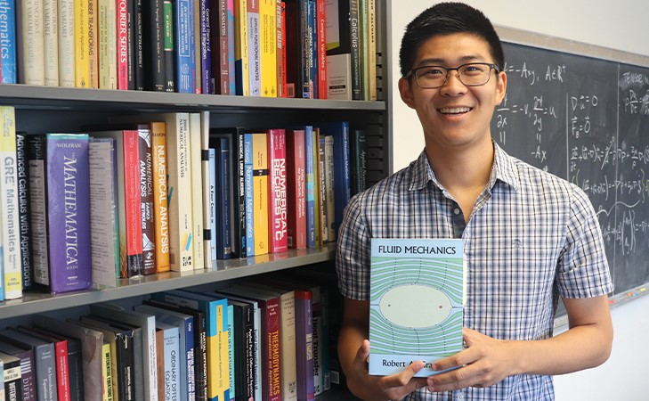

Those who know me know that I am VERY passionate about collecting books, particularly in mathematics and engineering. My growing collection of roughly 400 books began in college when my first research advisor instilled in me her passion of book collecting. Physical books offer many experiences that digital books cannot. You can write notes and corrections in the margins, interacting with the author. Similarly, you can read scribbled notes left behind by previous owners. But most importantly, you can pass on these books to future generations. This page is a short list of my personal favorites. If you have any suggestions, please email me your favorite books!

About MeI won the inaugural Seth Trotter Book Collecting Contest at the University of Delaware and entered the 2019 National Student Book Collecting Contest! Feel free to read about it below.